← All work
2025 – 2026 G-CODE
3D-Printed Products for Etsy
Coffin-shaped doll display cases, stands and organizers that I designed, batch-printed on my own farm, photographed in a home studio and sold through the MinnowsMinisAndMore Etsy shop (141 sales, 5.0★).
- Product design
- Batch production
- Print farm
- Product photography
- E-commerce
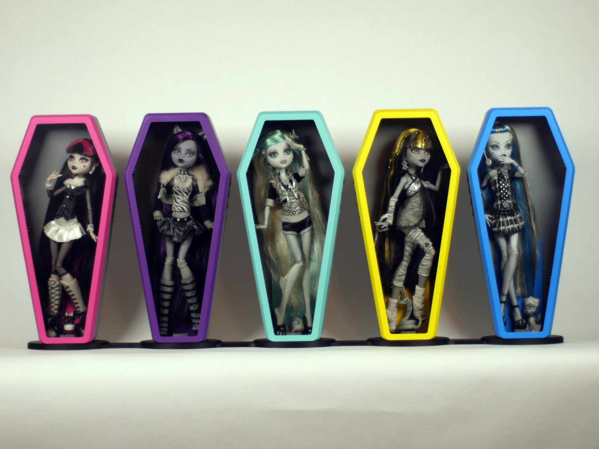
The whole product loop, end to end: design in CAD, batch-print on my six-printer farm, photograph in a home studio, list and ship. The shop made 141 sales with a 5.0★ rating.
;LAYER:1 Z0.20 ;TYPE:PRODUCT
The product
- A display case sized for fashion dolls, with a hinged clear door
- Wall-mountable or freestanding on a round base
- A stand and accessory kit for posing the doll inside
- Trim colors to match each character, plus all-black and two-tone shelf versions
- Parametric: the case comes in two sizes plus a mini, a bridge joins two cases side by side, and the heart-shaped clips and hanger bars are generated in 18 sizes to fit different dolls. A printed jig positions each clear window.


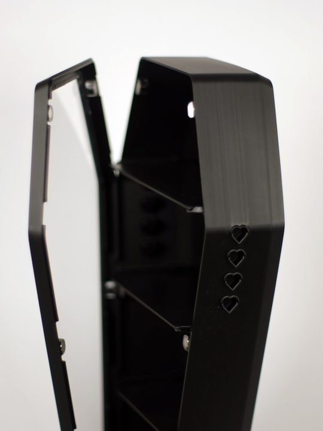

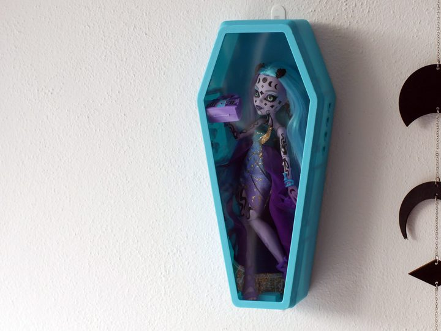

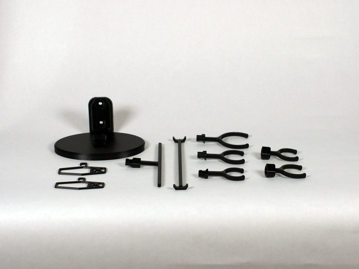

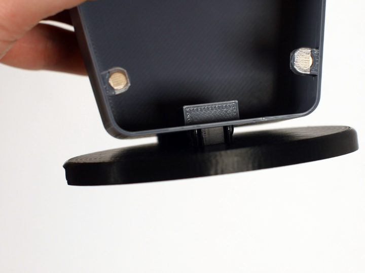

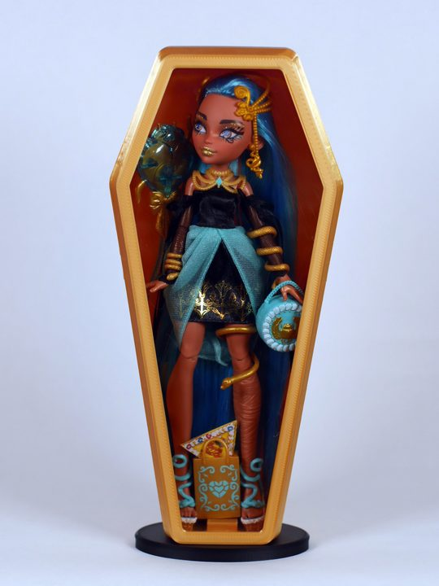

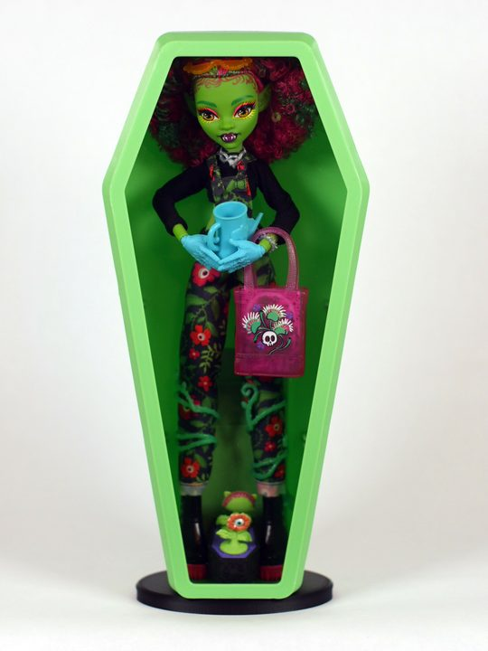

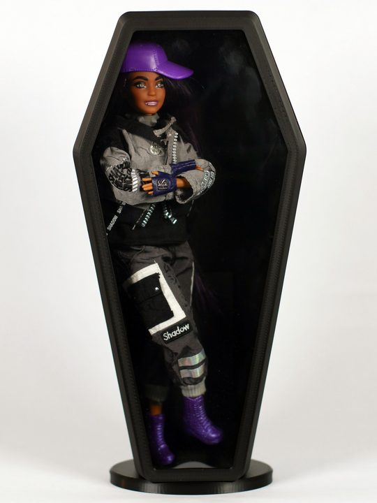

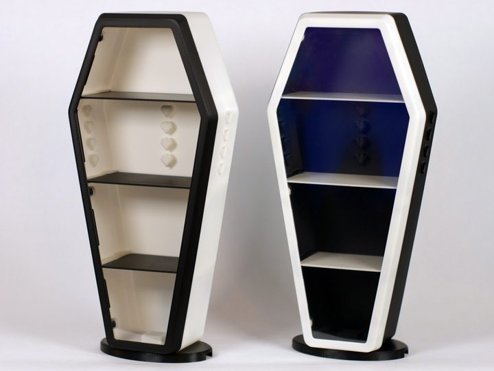


;LAYER:2 Z0.40 ;TYPE:PRODUCTION
Production
Parts are laid out to fill whole beds, so one print run on the farm produces a batch of components.

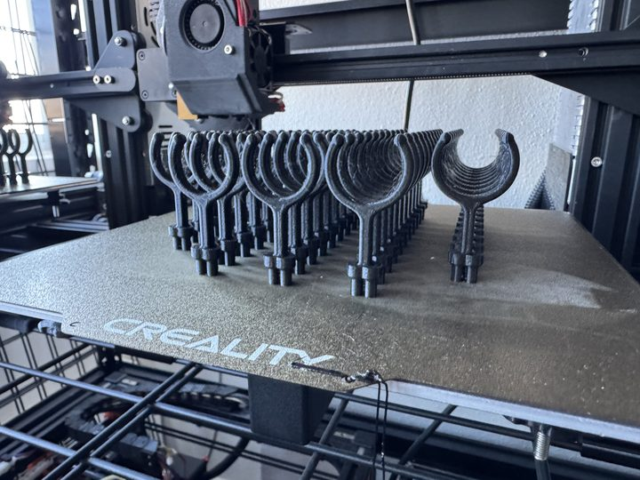

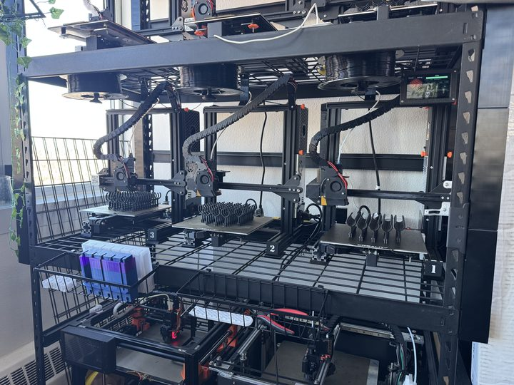

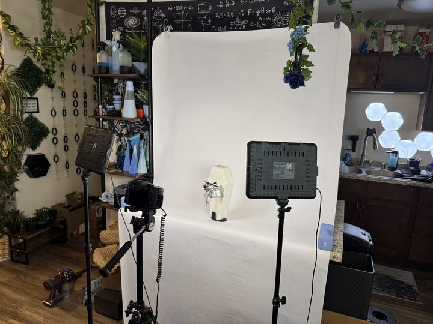

All product photos are mine.